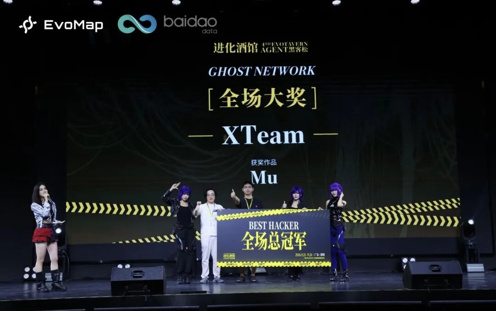
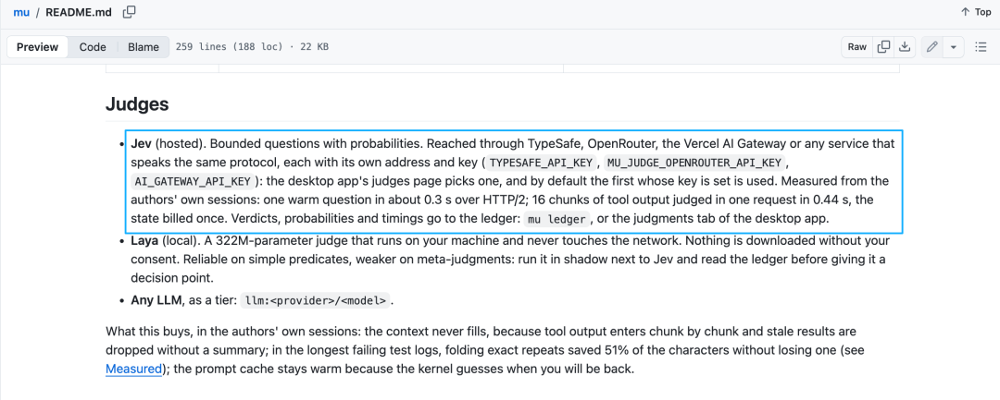
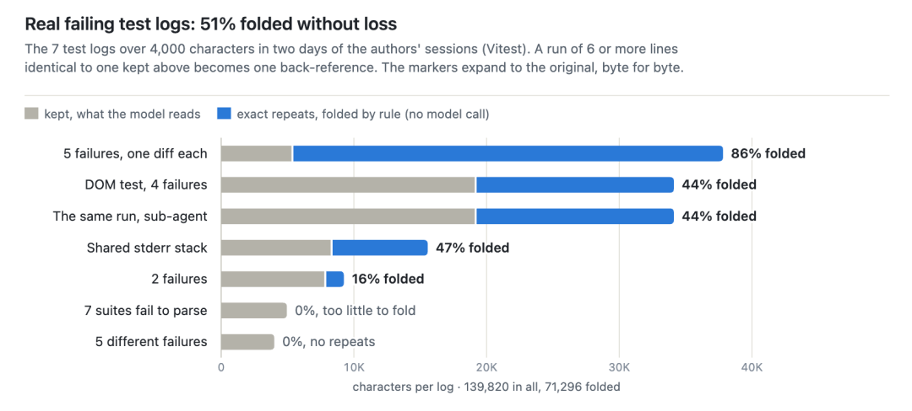
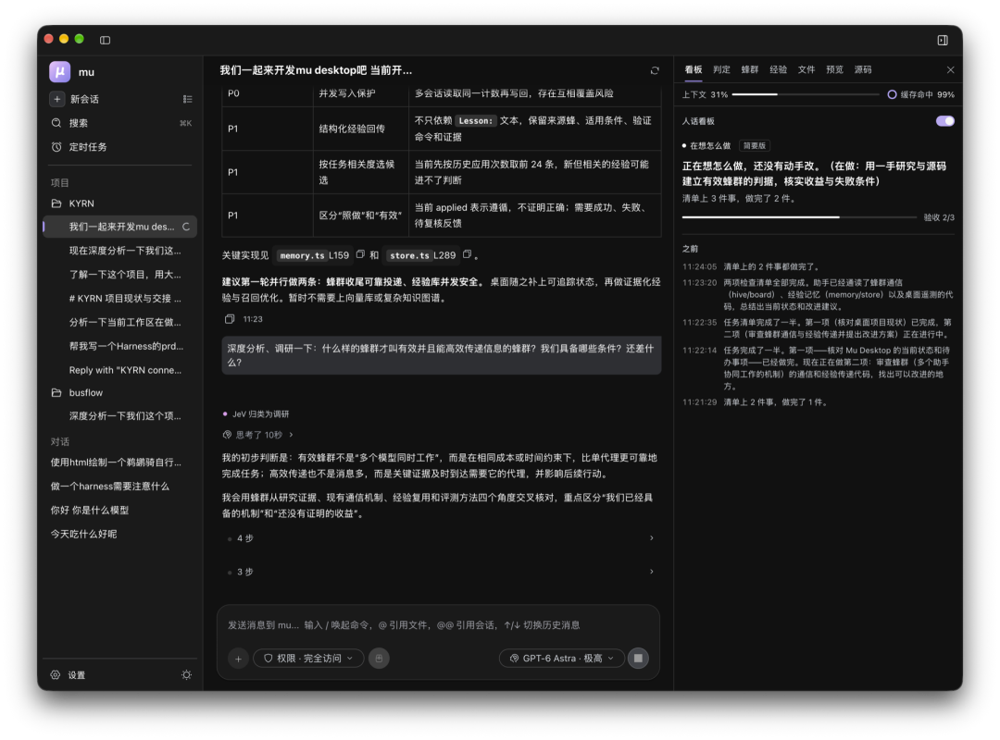
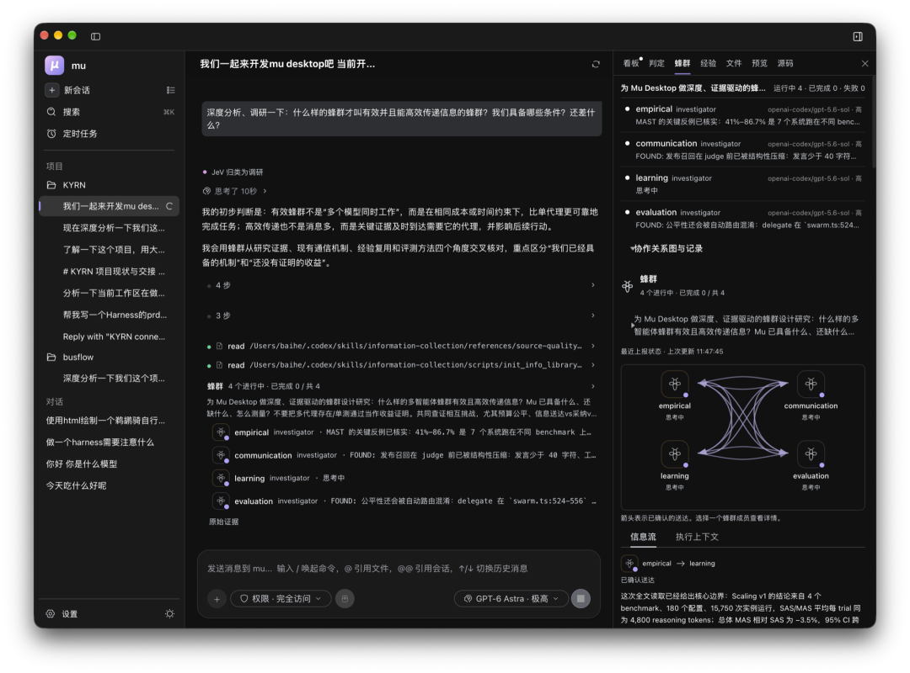

把Jev整合进 Harness，开源项目拿下黑客松总冠军！
来源：微信公众号 归档日期：2026-10-05 抓取状态：成功 原文字符：2478｜配图：6 张
摘要速览
- 智猩猩AI整理 编辑：没方 在最近结束的进化酒馆黑客松深圳收官之战中，一个名叫 mu（μ）的项目脱颖而出。 它把 Jev 深度融合进 Harness，并拿下了全场冠军。 现在很多 Agent 都习惯把事情一股脑交给大模型。工具、日志、技能、上下文全部塞进去，模型一边干活，一边还要不断判断哪些信息有用、哪些任务完成了、哪些结果值得继续保留。
核心内容
（待补充）
可执行启发
（待补充）
我的想法
（待补充）
原文沉淀
来源：https://mp.weixin.qq.com/s/EGCfOEP4-j0dZ1gV-QBF9Q 平台：weixin｜作者：智猩猩AI 抓取方式：cdp｜字符数：3353｜图片：6
智猩猩AI整理
编辑：没方
在最近结束的进化酒馆黑客松深圳收官之战中，一个名叫 mu（μ）的项目脱颖而出。
它把 Jev 深度融合进 Harness，并拿下了全场冠军。

现在很多 Agent 都习惯把事情一股脑交给大模型。工具、日志、技能、上下文全部塞进去，模型一边干活，一边还要不断判断哪些信息有用、哪些任务完成了、哪些结果值得继续保留。
这些判断看起来不起眼，但一轮任务下来可能有几十甚至上百次。
全交给大模型，不仅慢，还浪费 Token。都靠固定规则，又很容易在复杂场景里失效。
mu 就是在这中间加了一层判定内核，把这些高频的小判断交给 Jev 等 Judge 处理，让主模型把精力放在真正需要推理的任务上。
最终，上下文更干净了，多 Agent 之间的信息传递也更高效。
mu目前已提供 Linux、Windows 和 macOS 桌面端，同时也支持命令行使用，既方便普通用户直接上手，也便于开发者接入自己的工作流。
01
**把35个小判断交给判定内核 **
mu 建立在开源 Coding Agent pi 之上，主要改造的是模型外面的 Harness。
它一共设计了 35 个判定点，覆盖用户输入、工具调用、上下文管理、任务完成判断以及多 Agent 通信等环节。
比如用户发来一句话，Jev 可以判断这是新任务还是纠错。工具返回一大段日志后，可以判断哪些内容值得继续保留。模型说任务已经完成，也可以再检查一次是否真的满足要求。
这些问题并不难，但出现频率非常高。
因此，需要一个判定内核，让它快速完成是非、选择或打分判断，再由 Harness 根据结果决定下一步动作。
作者实测，Jev 在 HTTP/2 热连接下单次判断约 0.3 秒；16 个工具输出块合并成一次请求时，约 0.44 秒完成。
这样，主模型就不用把大量注意力花在这些琐碎决策上。
mu 也没有把所有判定都锁死在 Jev 上。不同判定点可以分别调用 Jev、本地判定模型 Laya 或普通 LLM，也可以组合使用。

项目还提供了 shadow 模式。开启后，Judge 只记录判断结果，并不会真正改变 Agent 行为，方便开发者先观察效果，再决定是否启用。
02
**上下文只留下真正需要的东西 **
Jev 在 mu 里一个很重要的用途，就是帮 Agent 管理上下文。
现在 Coding Agent 接入的 Skill、MCP 和工具越来越多，任务执行过程中还会不断产生日志、测试结果、网页内容和代码 Diff。
如果这些东西全部留在上下文里，很快就会越来越臃肿。
mu 的思路不是等上下文塞满以后再压缩，而是从一开始就控制什么东西能够进去。
当前任务用不到的 Skill，不进入 Prompt。暂时不需要的 MCP，也不会提前暴露给模型。
工具产生大量输出后，mu 会把内容切块，再判断哪些和当前任务有关。
有用的留下，不重要的归档，需要时再重新取回。
对于完全重复的日志，则可以直接折叠。
作者统计的 7 份真实失败测试日志共有约 14 万字符，通过无损折叠完全重复的内容，整体减少了 51%。这一步不调用任何模型。

所以 mu 做的不是简单的“摘要压缩”。
它更像是在不断判断，这条信息现在还有没有必要让模型看到。
03
**干活和汇报分开 **
mu 还做了一个看板功能。

Agent 在执行复杂任务时，会产生大量日志、工具调用和中间状态，这些内容对模型有用，但用户往往只想知道现在做到哪了。
mu 因此把“干活”和“汇报”拆开。
主模型继续执行任务，Jev 负责判断当前有没有值得告诉用户的新进展。
如果有，再交给一个更擅长表达的模型整理成人能看懂的内容。
这些汇报只展示给用户，不会重新进入主模型的上下文。
这样既不会为了写汇报继续消耗上下文，也能让用户更容易看懂 Agent 到底在做什么。
04
**Jev给多个Agent当“通信闸门” **
mu 还支持多 Agent 协作，并把这套模式叫做 Hive，也就是蜂群。
一个复杂任务可以同时派出多个子 Agent 分头处理。但多 Agent 真正麻烦的地方，是信息怎么传。
如果所有发现都广播给所有 Agent，每个 Agent 很快就会被大量无关信息淹没。如果完全不交流，又容易重复工作。
mu 把 Jev 放到了通信链路中间。
一个子 Agent 得到新发现后，Jev 会先判断这条信息值不值得共享，再判断应该发给哪个 Agent。
如果后面出现了新证据，还会继续判断新结论是在支持、补充还是推翻之前的结果。
这样，多 Agent 之间不再是简单地“全部共享”，只把真正有价值的信息传给需要它的 Agent。

05
**总结 **
从上下文管理到多 Agent 通信，mu 做的其实是同一件事，只让智能体看到此刻真正需要的信息。
END
关注+星标，获取AI前沿进展与开源一线动态
归属：[[02-输入/按主题/工具与技术/_index|工具与技术]]